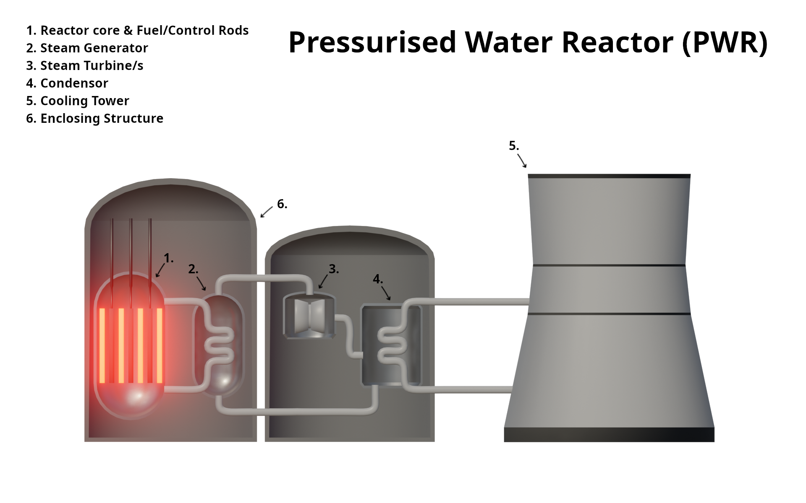
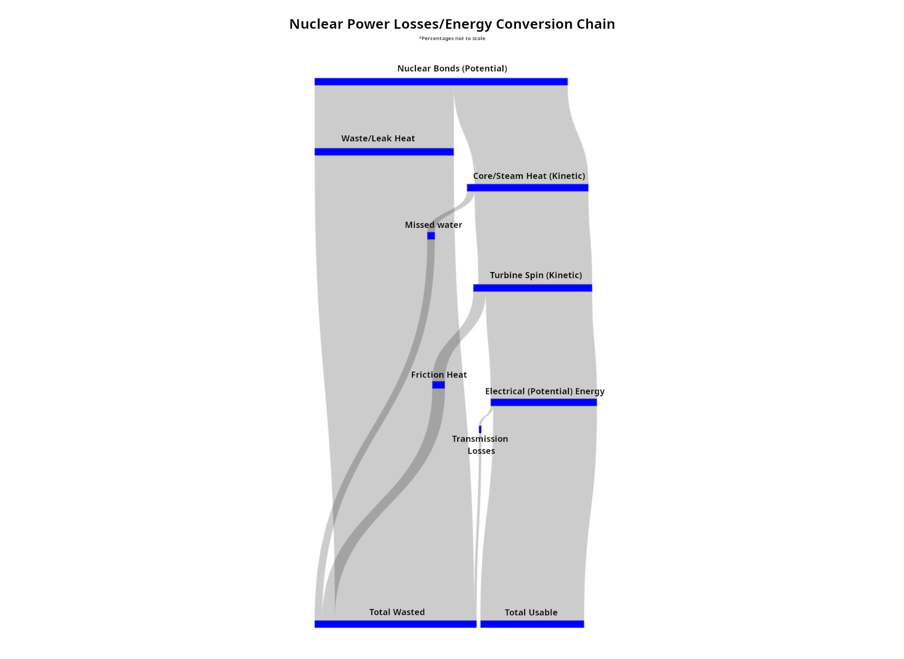

Background
Nuclear reactors are a type of energy source that harness the powerful energy contained within fissile materials,
most commonly Uranium isotope 235, by means of a controlled fission reaction. Every element is defined by the number
of protons and neutrons it contains, but due to them being inherently ‘neutral’, extra neutrons can always be added,
or sometimes removed. Atoms with added neutrons are called ‘isotopes’, and many have different or new characteristics
compared to the original element. While most naturally-found Uranium is in its basic form, U-238, the isotope more
sought-after is U-235, containing slightly less neutrons. Unike U-238, U-235 is able to undergo a fission reaction
much more easily. When a source of lone neutrons is given to fissile material like U-235, it begins to split atoms
into smaller nuclei that fly off (alpha/beta radiation) as well as releasing more neutrons. These neutrons cause
more atoms to split, releasing more neutrons, and so on, in a chain reaction. As a byproduct of this reaction, large
amounts of heat is released, which can then be converted into readily usable electricity.
Processing
Before being used in a reactor, fuel is “enriched” to contain higher concentrations of U-235, most commonly 3 to 5
percent, which allows for a better reaction. It is then melted into pellet form and housed in a shell made from
zircon alloy, which provides additional strength and makes handling easier, all while keeping neutron absorbtion low.
These fuel rods are then transported to the reactor and lowered in at regular intervals, alongside up to 264 others.
A standard rod will only have to be replaced every 18 months, as each pellet has the energy density of a ton of coal
– that’s 24,000,000kWh per kilogram of U-235, enough to power a house for over 50 years.
Reactor Design
Inside a reactor, alongside the fuel rods, are a number of ‘control’ rods that are capable of moving up and down so
as to slow down or increase the speed of the reaction. Usually, the top half of these are made up of materials that
block stray neutrons from passing through and causing more reactions in adjacent fuel rods, acting like a blanket
over a fire. The bottom half is made of graphite, which allows faster-travelling neutrons to bounce off and slow
down instead of being absorbed, causing them to react better with the fuel – speeding up the reaction instead. When
the reaction needs to be sped up, the rods are raised. To slow it down, the rods are lowered.
Most reactor designs incorporate a cooling system that pumps water or heavy water (water where the hydrogen is replaced with
deuterium, an isotope of hydrogen with an extra neutron) through the core, drawing away heat. In boiling-water reactors
(BWRs) this allows the water to boil, releasing steam that powers a turbine generator. In pressurised water reactors (PWRs)
the water within the core is contained in an isolated, sealed loop, and steam is generated in a seperate loop by means of
a heat exchanger. The steam in the secondary loop is then cooled by means of a condenser connected to a cooling tower –
that’s the distinctive ‘smokestack’ seen at nuclear power sites, letting off what is in reality just steam from the
condensor, made from water drawn from something like a groundwater source or river.

Simplified design of a PWR reactor.
PWRs also use ‘heavy water’ for the innermost core-cooling loop. Heavy water is water where the hydrogen has been substituted for
deuterium, an isotope of hydrogen with an extra neutron – where regular water acts as a neutron absorbant, heavy water is a
moderator, only slowing down passing neutrons. This is a much safer setup compared to regular BWRs, as when the water boils it
will dampen it’s properties due to steam voids (bubbles); for a PWR, this means the moderating capability of the heavy water will
slow, slowing the reaction. In BWRs, the water won’t be as good at absorbing neutrons, so it will increase the reaction, which in
turn increases the heat and amount of voids in the water, and so on, in a positive feedback loop. This is exactly what caused the
Chernobyl disaster. BWRs like RMBKs, the type used in Chernobyl, are still operational; and are only chosen because they are
cheap – they require less enriched fuel to operate. And even if PWRs aren’t perfect, and are still prone to meltdowns, even in such an event they are
much more localised and easier to deal with. The 3 mile island incident is a great example – you barely ever hear about it, because the containement
effort was so succesful. Everyone always thinks of Chernobyl and Fukashima.
Conversion and Losses
While Nuclear power may be much more efficient than other sources, it still has losses - only around 33-37 percent of the original thermal
energy gets turned into usable electricity. The largest factor in this loss is simply dissapation of the heat itself; most of it doesn’t
even get to the point of generating steam and powering the turbines, and even then the ‘excess’ has to be vented through the use of
cooling towers. And then there’s the efficiency of the turbines themselves, and the connected generator – usually, due to mechanical
friction, electrical generators will only have around a 70% efficiency rate, and the structure of the turbine will also cause significant
amounts of energy to be wasted. Much less minor, there is also electricty lost because of inneficiencies during transmission over long
distances – this only results in about a 1-2 percent loss.

Sankey diagram of energy conversion and losses.